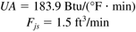

| 8: | Consider Example 2.5, the stirred-tank heater example. Read and work through the example. Use the following parameters and steady-state values:
Fs = 1 ft3/min | rcp = 61.3 Btu/(°F · ft3) | rjcpj = 61.3 Btu/(°F · ft3) | Tis = 50°F | Ts = 125°F | V = 10 ft3 | Tjis = 200°F | Tjs = 150°F | Vj = 2.5 ft3 |
By solving the steady-state equations, verify that the following values obtained for UA (overall heat transfer coefficient * area for heat transfer) and Fjs (steady-state jacket flow rate) are correct: 
Find the values of the matrices in the state space model. Write a function file, heater.m (example shown below), to be used with ode45 (Module 3) to solve the two nonlinear ordinary differential equations. First, verify that the steady-state state variable values are correct by simulating the process with no change in the jacket flow rate. Now, perform simulations for small and large step changes in the jacket flow rate. Use the MATLAB step command to solve for the linear state space model. Realize that the step results are based on deviation variables and for a unit step change in input one (jacket flow rate), and convert the linear states to physical variable form. We now consider the important issue of scale-up: Pilot plants are small-scale (intermediate between lab-scale and full-size manufacturing-scale) chemical processes, used to understand process operating behavior before the manufacturing process is designed. Here we discover the effect of vessel scale on the heat transfer removal capability of a vessel. Consider now a vessel that can handle 10 times the throughput of the previous vessel (that is, 10 ft3/min rather than 1 ft3/min). Assume that the same residence time is maintained (V/F = 10 minutes), so the volume of the new vessel is 100 ft3. Assume that the heat transfer coefficient (U) remains constant, but that the heat transfer area changes. Assume that the vessel can be modeled as a cylinder, with the height (L) = 2*diameter (D). Find the value of UA for the larger vessel. For the larger vessel, find the new steady-state value of jacket temperature that must be used to maintain the vessel temperature at T = 125°F. Also, find the new steady-state jacket flow rate. Hint: Solve the two modeling equations at steady state to obtain these values. Discuss the effect of process scale-up on the operating conditions. How large can the vessel become before the jacket temperature is too high (it approaches the inlet jacket temperature)? For the larger vessel, find the new state space model, assuming that the jacket volume is 0.25 times the vessel volume. Calculate the eigenvalues of the A matrix. How do they compare with the smaller vessel? Find the step response for the nonlinear and linear (state space) systems for a step increase of 0.1 ft3/min in jacket flow rate. How do these compare with the smaller vessel? Find the step response for the nonlinear and linear (state space) systems for a step increase of 10% in the jacket flow rate. How do these compare with the smaller vessel?
Example m-file to be used by ode45
function xdot = heater(t,x,flag,delFj);
%
% Dynamics of a stirred tank heater
% (c) 1994 - B.W. Bequette
% 8 July 94
% 23 Jan 01 - revised for jacket step change in argument list
%
% x(1) = T = temperature in tank
% x(2) = Tj = temperature in jacket
% delFj = change in jacket flowrate
% F = Tank flowrate
% Tin = Tank inlet temperature
% Tji = Jacket inlet temperature
% V = Tank volume
% Vj = Jacket volume
% rhocp = density*heat capacity
% rhocpj = density*heat capacity,jacket fluid
%
% parameter and steady-state variable values are:
%
F = 1;
Fjs = 1.5;
Ti = 50;
Tji = 200;
V = 10;
Vj = 2.5;
rhocp = 61.3;
rhocpj= 61.3;
UA = 183.9;
%
% step change in jacket flow
%
Fj = Fjs + delFj;
T = x(1);
Tj= x(2);
%
% odes
%
dTdt = (F/V)*(Ti - T) + UA*(Tj - T)/(V*rhocp);
dTjdt = (Fj/Vj)*(Tji - Tj) - UA*(Tj - T)/(Vj*rhocpj);
xdot = [dTdt; dTjdt];
%
% generate simulations using
% [t,x] = ode45('heater',tspan,x0,[],delFj);
% where tspan = [0 30], for example
To make the runs go faster, you may wish to generate and run the following script file:
%
% runs stirred tank heater example - 23 Jan 01
% step changes to stirred tank heater
%
% make certain you enter the step change value (delFj)
% before running this file
% also, generate function file with the following first line:
% function xdot = heater(t,x,flag,delFj);
%
options = odeset('RelTol',1e-6,'AbsTol',[1e-6 1e-6]);
%
[t,x] = ode45('heater',tspan,x0,options,delFj);
%
figure(1)
subplot(2,1,1),plot(t,x(:,1))
title('nonlinear, using ode45')
xlabel('time, min')
ylabel('temp, deg F')
subplot(2,1,2),plot(t,x(:,2))
xlabel('time, min')
ylabel('jacket temp, deg F')
%
% state space model with unit step change
a = [-0.4 0.3;1.2 -1.8];
b = [0;20];
c = [1 0;0 1];
d = 0;
sys = ss(a,b,c,d);
[ylin,tlin] = step(sys);
%
figure(2)
subplot(2,1,1),plot(tlin,ylin(:,1))
title('linear state space, unit step, deviation')
xlabel('time, min')
subplot(2,1,2),plot(tlin,ylin(:,2))
xlabel('time, min')
%
% scale deviation by delFj
ylinscale = ylin*delFj;
% plot in physical variable form
figure(3)
subplot(2,1,1),plot(tlin,125+ylinscale(:,1))
title('linear state space, physical magnitude')
xlabel('time, min')
subplot(2,1,2),plot(tlin,150+ylinscale(:,2))
xlabel('time, min')
% compare linear and nonlinear on same plot
figure(4)
subplot(2,1,1),plot(t,x(:,1),tlin,125+ylinscale(:,1),'--')
title('nonlinear vs. linear')
xlabel('time, min')
ylabel('temp, deg F')
legend('nonlinear','linear')
subplot(2,1,2),plot(t,x(:,2),tlin,150+ylinscale(:,2),'--')
xlabel('time, min')
ylabel('jacket temp, deg F')
legend('nonlinear','linear')
|